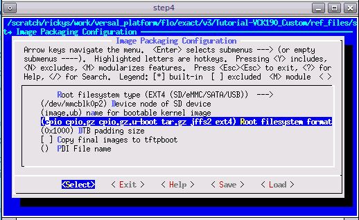

Versal カスタム プラットフォーム作成チュートリアル |
手順 2: PetaLinux でのソフトウェア コンポーネントの作成¶
この手順では、Vitis プラットフォームの必須コンポーネントを含む PetaLinux プロジェクトを作成します。
PetaLinux プロジェクトの作成¶
PetaLinux 環境を
source <petaLinux_tool_install_dir>/settings.shで設定します。前の手順で作成した XSA を使用して PetaLinux プロジェクトを作成します。
petalinux-create -t project --template versal --force -n petalinux cd petalinux petalinux-config --get-hw-description=<path to xsa directory> --silentconfig
作成される PetaLinux プロジェクト名は petalinux です。PetaLinux プロジェクト名は petalinux-create -n オプションで自由に変更できます。
注記: PetaLinux 2021.1 では 6.0 以降の GCC バージョンが必要です。GCC のバージョンがこの要件を満たしていない場合は、[petalinux-config] → [Yocto settings] から [Enable buildtools extended] をオンにします。この設定にすると、PetaLinux ツールからコンパイル済みの gcc バイナリが使用されます。詳細は、UG1144 を参照してください。
ルート ファイル システム、カーネル、デバイス ツリー、および U-Boot のカスタマイズ¶
追加の rootfs パッケージを定義する user-rootfsconfig ファイルを準備します。
<your_petalinux_project_dir>/project-spec/meta-user/conf/user-rootfsconfig ファイルに次に示す CONFIG_xxx 行を追加して、ユーザー パッケージを追加します。
注記: この手順は必須ではありませんが、次の手順で必要なパッケージをすべて見つけやすくなります。
ベースの XRT サポート用のパッケージ (必須):
CONFIG_xrtXRT パッケージには、Vitis アクセラレーション ランタイム用のすべてのパッケージが含まれます。
注記:
CONFIG_packagegroup-petalinux-xrtは 2021.1 以降は必要ありません。
オンボード アクセラレーション アプリケーション コンパイル サポート用パッケージ (オプション):
CONFIG_xrt-dev
パッケージ名には
-devが最後に付き、Yocto で環境をコンパイルする際に必要なヘッダー ファイル、依存ライブラリ、ソフト リンクが含まれます。
システム管理を容易にするパッケージ (オプションですが推奨):
CONFIG_dnf CONFIG_e2fsprogs-resize2fs CONFIG_parted
dnf はパッケージ管理ツールです。
parted および e2fsprogs-resize2fs は ext4 パーティションを拡張して残りの SD カードを使用できるようにします。
rootfs パッケージを追加します。
petalinux-config -c rootfsを実行して user packages を選択し、上記すべてのライブラリの rootfs の名前を選択し、保存して終了します。手順 1 を飛ばした場合は、検索機能で
/キーを使用してこれらのパッケージを検索し、イネーブルにしてください。rootfs config で [Image Features] を選択し、[package-management] および [debug_tweaks] をオンにし、変更を保存して終了します。(推奨)。
[Exit] を選択して [Enter] を押して、[user packages] を終了してルート コンフィギュレーション ウィンドウに戻ります。
[Image Features] を選択して [Enter] を押します。
Space キーを押して、[package-management] および [debug_tweaks] をオンにします。package-management のサブアイテムは必要ありません。
Exit
Exit
Save

EXT4 を SD カード ブートの rootfs ファイル形式として使用します (推奨)。
PetaLinux は、デフォルトで rootfs に initrd 形式を使用します。この形式は、DDR メモリ内の rootfs を抽出します。つまり、実行時に使用可能な DDR メモリが減り、再起動後に rootfs の変更を保持できないことを意味します。ルート ファイル システムで変更が保持できるようにするには、SD カード上の 2 つ目のパーティションとして rootfs に EXT4 形式を使用し、1 つ目のパーティション FAT32 にはほかのブートファイルを保存します。
petalinux-configを実行します。[Image Packaging Configuration] で [Root File System Type] に [EXT4] を選択します。

デバイス ツリーのカスタマイズ¶
VCK190 デバイス ツリーを適用します。
petalinux-configを実行します。[DTG Settings] をクリックします。
MACHINE_NAME オプション (コンフィギュレーション オプション名は CONFIG_SUBSYSTEM_MACHINE_NAME) に versal-vck190-reva-x-ebm-02-reva を入力します。
注記: このプリセット デバイス設定により、VCK190 ボードのデバイス ツリーにイーサネット PHY 情報が追加されます。デバイス ツリーのソース コードが PetaLinux プロジェクトに適用されます。VCK190 ボードのバージョンが異なる場合は、デバイス ツリーのソース コード ディレクトリにボードに対応するデバイス ツリーのバージョンがあるかどうかを確認し、PetaLinux プロジェクトで適用してください。git リポジトリをクローンしたり、GitHub のファイル検索機能を使用できます。

(オプション) システム ユーザーのデバイス ツリーを更新します。
特別な設定が必要なカスタム ペリフェラルがオンボードにある場合は、system-user.dtsi でアップデートしてください。
注記: PetaLinux 2021.1 は XSA タイプを検出し、デバイス ツリーで ZOOCL ノードを自動的に生成し、XSA がエクステンシブル XSA の場合は、XSA のハードウェア設定に従って割り込み入力番号を更新します。これは 2021.1 からの新機能です。
PetaLinux イメージのビルド¶
PetaLinux プロジェクト内の任意のディレクトリから、PetaLinux プロジェクトをビルドします。
petalinux-build
生成された U-Boot イメージと Linux イメージは、images/linux ディレクトリに保存されます。
sysroot をビルドします。
petalinux-build --sdk
sysroot sdk.sh は images/linux ディレクトリに生成されます。これは、次の手順で抽出します。
スクリプトを使用した実行¶
PetaLinux プロジェクトを再作成し、出力を生成するスクリプトが提供されています。これらのスクリプトを使用するには、次の手順を実行します。
ビルドを実行します。
# cd to the step directory, e.g. cd step2_petalinux make
生成されたファイルをクリーンアップするには、次を実行します。
make clean
注記: ハードウェア プラットフォームとソフトウェア プラットフォームがすべて生成されます。次に、Vitis プラットフォームをパッケージします。
Copyright© 2021 Xilinx